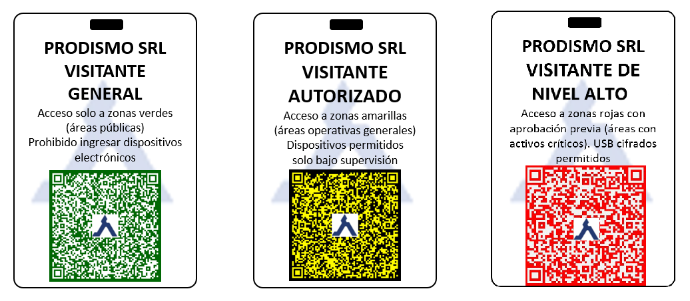

Procedimiento de Acceso de Visitantes
Código: P311-IT-2
Última revisión: 16/11/2026
Rev. N°: 2
Cumple: TISAX (VDA ISA 3.1.1), ISO 27001:2022 (A.7.2)
1 OBJETIVO
Describir el registro, la identificación, el acompañamiento y la salida de los visitantes, según MC311-IT-1 y el control 3.1.1 de TISAX.
2 FLUJO DEL PROCESO
| Etapa | Responsable | Registro |
|---|---|---|
| 1. Aviso de la visita a la guardia (opcional: F311-IT-4) | Anfitrión | F311-IT-4 / correo |
| 2. Registro y aceptación del acuerdo de confidencialidad | Visitante (QR o enlace) | F311-IT-1 / F311-IT-2 |
| 3. Declaración de dispositivos | Visitante | F311-IT-3 |
| 4. Verificación de identidad contra el registro | Guardia | DNI o pasaporte |
| 5. Entrega de credencial con el color de la categoría | Guardia | Control de credenciales |
| 6. Recepción y acompañamiento | Anfitrión | — |
| 7. Ingreso a zona roja (solo nivel alto) | Persona autorizada | F311-IT-7 |
| 8. Salida y devolución de la credencial | Guardia | Control de credenciales |
3 DESCRIPCIÓN
3.1. Antes de la visita
- El anfitrión avisa a la guardia el nombre, la empresa, el motivo y la categoría del visitante; puede usar el formulario F311-IT-4 (opcional).
- El visitante completa el F311-IT-1 y acepta el F311-IT-2 escaneando el QR o con el enlace; si trae notebook, USB u otros equipos, completa el F311-IT-3.


Códigos QR de los formularios F311-IT-1/2 y F311-IT-3
3.2. Ingreso
- La guardia verifica el DNI o pasaporte contra el registro del F311-IT-1. Si el visitante no se registró, lo hace en la guardia antes de pasar.
- La guardia entrega la credencial de visitante con el color de la categoría (verde: general; amarillo: autorizado; rojo: nivel alto) y llama al anfitrión.

Credenciales de visitantes por categoría
3.3. Durante la visita
- El anfitrión acompaña al visitante en las zonas amarilla y roja en todo momento.
- Las notebooks de visitantes solo se conectan a la Wi-Fi de invitados; no se permiten fotos ni filmaciones sin autorización.
- Para ingresar a una zona roja, el visitante debe ser de nivel alto, con aprobación del IT Manager, y el ingreso se registra en el F311-IT-7.
3.4. Salida
- El visitante devuelve la credencial en la guardia. Si falta una credencial, la guardia avisa al anfitrión y a IT.
3.5. Control
- IT revisa una vez por mes las respuestas de los formularios F311-IT-1/2 y F311-IT-3 y las conserva como registro.
4 REGISTROS Y EVIDENCIAS
| Registro | Retención |
|---|---|
| F311-IT-1 Registro de Visitantes y F311-IT-3 Dispositivos (Microsoft Forms) | 2 años |
| F311-IT-2 Acuerdo de Confidencialidad aceptado | 5 años |
| F311-IT-4 Solicitud de Visita (si se usó) | 2 años |
| F311-IT-7 Accesos a zonas rojas | 3 años |
5 REVISIONES DEL DOCUMENTO
| Rev. N° | Fecha | Descripción |
|---|---|---|
| 0 | 25/8/2025 | Primera emisión del documento |
| 1 | 23/2/2026 | Revisión completa del documento |
| 2 | 16/11/2026 | Flujo real con formularios QR, verificación de identidad por la guardia, credenciales por color, acompañamiento y F311-IT-7 para zonas rojas; F311-IT-4 opcional; se quitan requisitos de clientes, formateo de dispositivos de auditores y métricas no aplicadas. Aprueba la Gerencia de RRHH. |